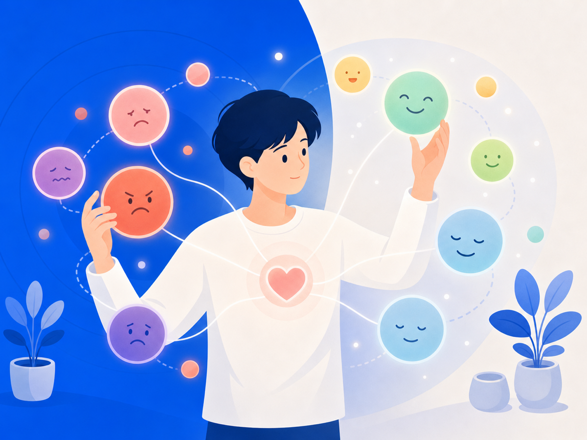

감정에 이름을 붙이면 뇌가 진짜로 달라져요 — 정서 명명


힘든 감정이 밀려올 때, 우리는 보통 그걸 빨리 떨쳐내려고 해요. 없는 척, 괜찮은 척. 그런데 오히려 그 감정을 정면으로 보고 이름을 붙이는 쪽이 더 빨리 진정된다는 게 연구로 확인됐어요. 막연한 위로가 아니라, 뇌를 직접 찍어서 확인한 이야기예요.
감정에 이름을 붙이면 뇌 안의 경보가 잦아들어요
UCLA 심리학과 매슈 리버먼(Matthew D. Lieberman) 교수 연구팀이 2007년 Psychological Science에 발표한 연구예요. 참가자들이 무서운 표정의 얼굴 사진을 보면서 그 감정에 이름을 붙였을 때, 편도체 반응이 눈에 띄게 줄었어요.
편도체는 뇌 안의 화재경보기 같은 곳이에요. 위협을 감지하면 바로 스트레스 반응을 시작시켜요. 그런데 "나 지금 무섭다"고 말로 표현하는 순간, 이성과 언어를 담당하는 전전두피질이 활성화되면서 그 경보가 잦아드는 거예요. 리버먼 교수는 이걸 "감정 반응에 브레이크를 거는 것"이라고 표현했어요.
흥미로운 건, 같은 사진에 "메리", "피터" 같은 이름을 붙이는 건 효과가 없었어요. 감정의 이름을 정확히 말하는 것 — 그게 핵심이에요.
"기분 나쁘다"보다 "무시당한 것 같아서 화가 난다"가 더 강해요
막연하게 "기분이 안 좋다"고 뭉뚱그리는 것보다, 구체적으로 이름을 찾아가는 게 더 효과적이에요. 연구자들은 이걸 감정 세분화(emotional granularity)라고 불러요. 감정을 더 세밀하게 구별할수록 감정 조절 능력이 높아지고 정서적 안녕감도 좋아진다는 거예요.
예를 들면 이런 차이예요. "화났다"보다 "그 말이 내 오랜 불안을 건드린 것 같아서 속상하다"가 더 정확한 이름이고, 더 깊은 진정을 불러와요.
이름 붙이는 연습, 이렇게 해봐요
감정 일기를 써보세요. 오늘 어떤 감정이 들었는지, 무엇 때문인지 짧게 적으면 돼요. "억울했다", "외로웠다" — 단어 하나도 충분해요.
글이 어색하다면 소리 내어 말해도 돼요. "나 지금 지쳐 있어"라고 혼자 조용히 말하는 것만으로도 감정을 조금 떨어져 바라보는 데 도움이 될 수 있어요.
감정 단어를 조금씩 늘려가는 것도 도움이 돼요. '슬프다', '화난다' 말고도 '억울하다', '서럽다', '쓸쓸하다', '막막하다' — 더 정확한 이름이 더 깊은 위로가 되거든요.
오늘 해볼 수 있는 것
지금 마음이 무겁다면, 딱 한 문장만 적어봐요. "나는 지금 ___하다." 공란에 어떤 단어가 들어가도 괜찮아요. 그 단어를 찾는 것 자체가 뇌에게 "괜찮아, 나 여기 있어"라고 말해주는 거예요.
이 글은 일반 정보예요. 구체적인 일은 전문가(상담·변호사)와 상의하세요. 많이 힘들 땐 자살예방상담 109(24시간)가 있어요.
참고 자료
- Lieberman et al. (2007) — Putting Feelings into Words, Psychological Science, SAGE Journals
- PubMed — Putting feelings into words: affect labeling disrupts amygdala activity (Lieberman 2007)
- UCLA Health 보도 — Putting Feelings Into Words Produces Therapeutic Effects in the Brain
- NLC Research — Putting Feelings into Words 연구 정리